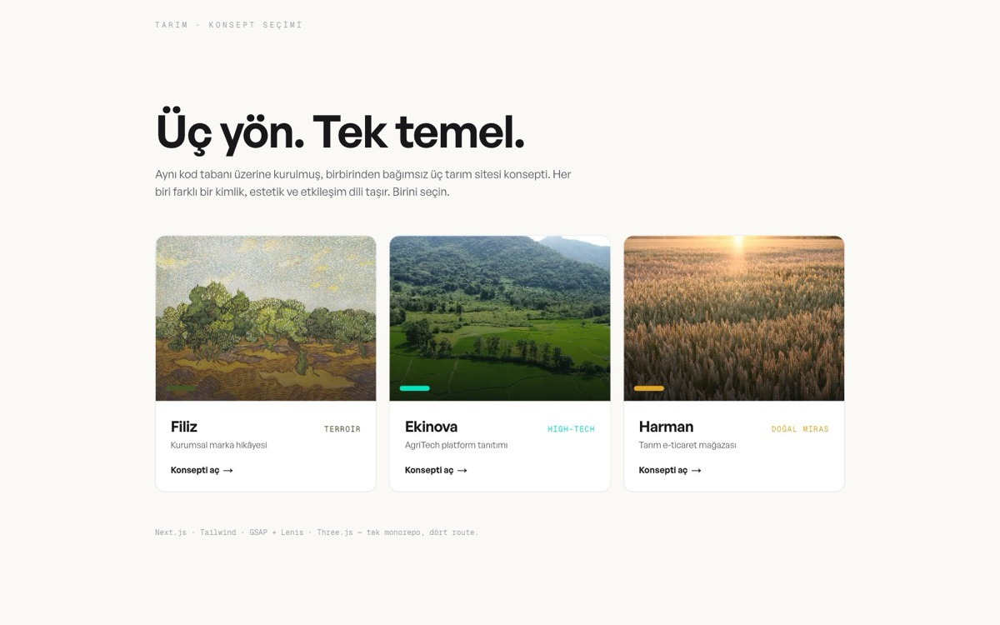

Otomasyon ve ilk modeller
Bir şeyi anlamanın en hızlı yolu, bozulana kadar onu parçalarına ayırmak.
Hakkımda
Recep Tayyip Erdoğan Üniversitesi'nde bilgisayar mühendisliği okuyorum, üçüncü sınıftayım. Otomasyonla başladım, makine öğrenmesiyle devam ettim; şimdi hem web ürünleri hem de arka uç servisleri yazıyorum.
Tek bir alana bağlı değilim. Beni ilgilendiren problemin kendisi: bir bankada risk skorlaması, bir sosyal platformun arkasındaki veri modeli ya da tek dosyalık bir komut satırı aracı.
Yazdığım her depoda aynı üç şeye bakarım: tip güvenliği, testler ve birinin gerçekten okuyabileceği bir README.
Zaman çizelgesi
Her satır, gerçek bir tarihte açılmış gerçek bir depo.
Bir şeyi anlamanın en hızlı yolu, bozulana kadar onu parçalarına ayırmak.
Bankacılık problemleri. Doğruluk oranının tek başına hiçbir şey söylemediğini burada öğrendim.
Üç haftada yedi servis: ağ geçidi, önbellek, gözlemlenebilirlik, CI kapısı.
–
Bir bölüm arşivi, bir yayın platformu çalışması ve üç konseptli bir tarım sitesi.

Araç kutusu